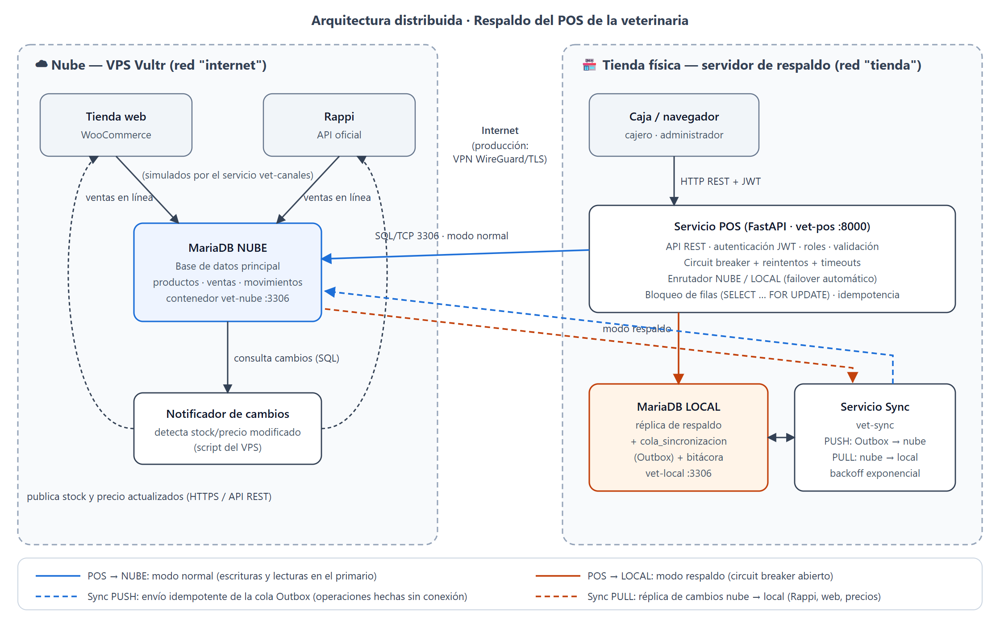
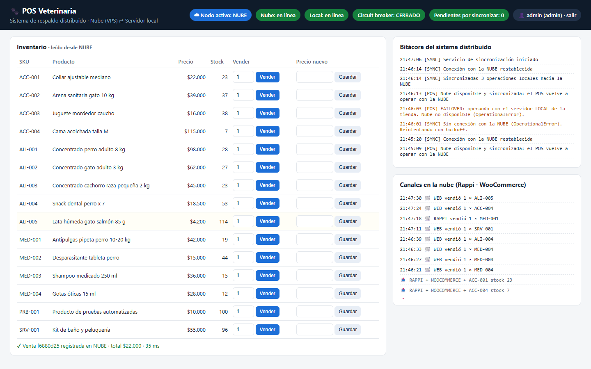
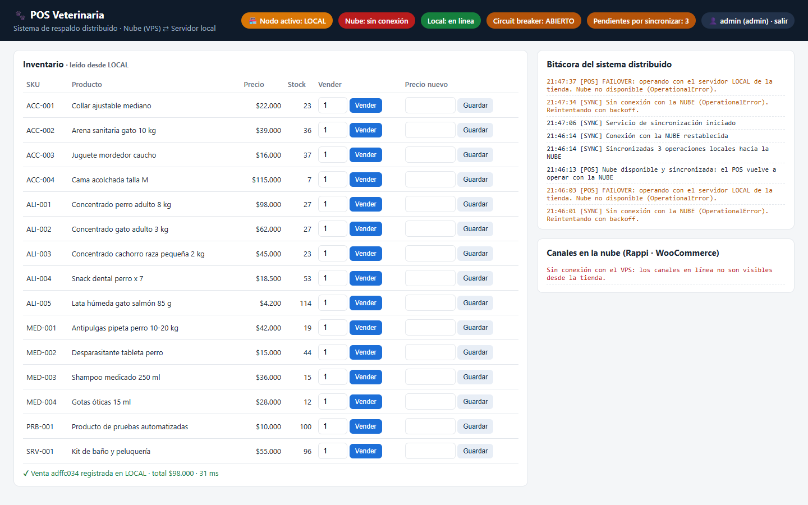
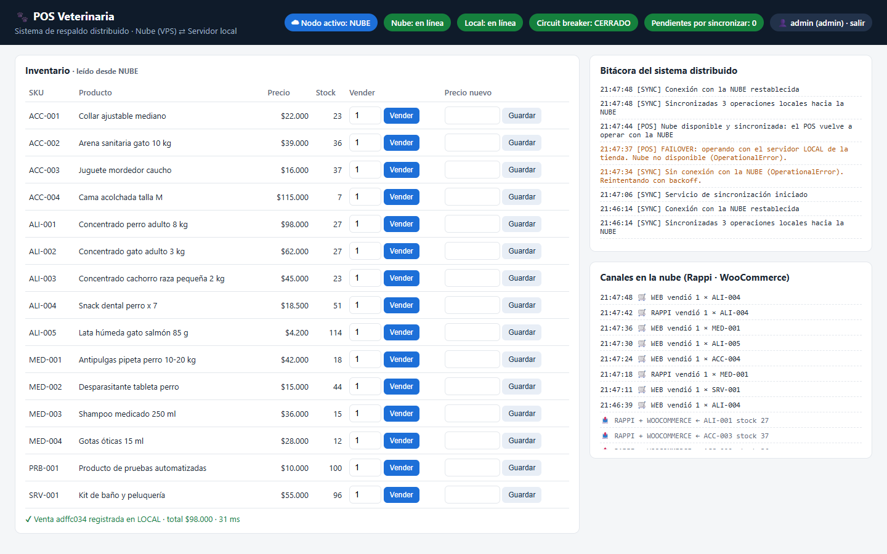
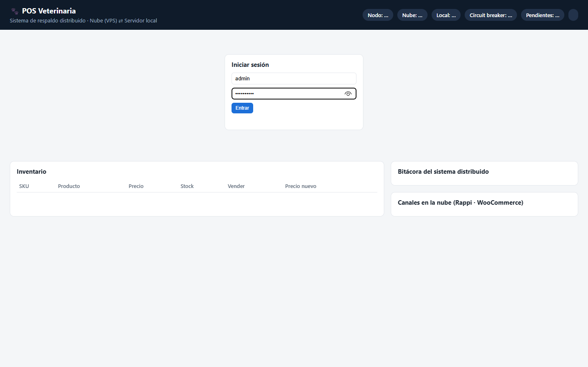
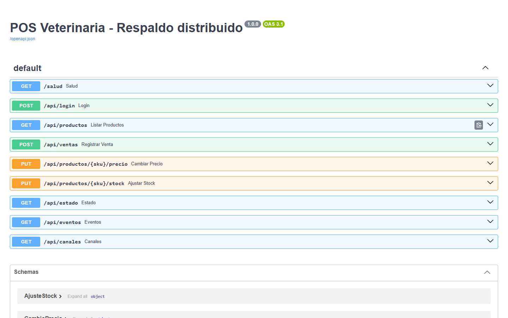

Diseño e Implementación de un Servidor de Respaldo Distribuido para el Sistema POS
de una Veterinaria con Tolerancia a Fallos y Sincronización con la Nube
[NOMBRE DEL ESTUDIANTE]
Universidad Manuela Beltrán
Sistemas Distribuidos
Ing. Juan José Osorio Tabares
18 de noviembre de 2026
1. Introducción
2. Planteamiento del problema
3. Justificación
4. Objetivos
5. Marco conceptual
6. Análisis de requisitos
7. Diseño de la arquitectura distribuida
8. Diseño de componentes y comunicación
9. Desarrollo e implementación
10. Tolerancia a fallos y recuperación
11. Seguridad del sistema
12. Pruebas y evaluación
13. Despliegue y ejecución
14. Resultados y análisis
15. Presupuesto
16. Conclusiones
Referencias
Anexos
Una veterinaria con tienda física vende productos y servicios por tres canales: el punto de venta (POS) del local, una tienda en línea construida sobre WooCommerce y la plataforma de domicilios Rappi. Los tres canales comparten la misma información de inventario y precios, almacenada en una base de datos MariaDB alojada en un servidor privado virtual (VPS) contratado con el proveedor Vultr. En la tienda física, el software comercial de punto de venta modifica constantemente esa información: cada factura descuenta existencias y el administrador ajusta precios. Un script que corre en el VPS detecta esos cambios y los publica en la API oficial de Rappi y en la tienda web.
Esta arquitectura centralizada tiene un punto único de falla. Si el VPS deja de responder, o si la tienda pierde la conexión a internet, el punto de venta no puede consultar precios ni registrar ventas, y la operación del local se detiene. El presente proyecto propone y construye una solución basada en los principios de los sistemas distribuidos: un servidor de respaldo físico ubicado en la tienda, que mantiene una réplica de la base de datos, al que el POS conmuta automáticamente cuando la nube no está disponible, y que sincroniza las operaciones con la nube cuando la conexión se restablece.
Como la información real del negocio es sensible (credenciales de acceso, direcciones de servidores, datos de clientes y ventas) y la guía del proyecto exige publicar el código en un repositorio público, la solución se implementó como una simulación fiel con contenedores Docker y datos ficticios. La simulación reproduce los nodos reales (VPS y servidor local), los canales externos y las fallas de red. El POS comercial se representa con un servicio propio que expone las mismas operaciones de negocio. Según Tanenbaum y van Steen (2017), un sistema distribuido debe ocultar a sus usuarios la ubicación y las fallas de sus componentes; ese es precisamente el objetivo de la solución: que el cajero siga vendiendo sin percibir que la nube dejó de estar disponible.
El negocio depende por completo de un único servidor remoto. El POS de la tienda física es el canal con mayor volumen de transacciones y el único donde se factura físicamente la mercancía, pero no tiene ninguna capacidad de operar de forma autónoma: toda lectura de precios y toda escritura de inventario viaja por internet hasta el VPS.
Las causas de la problemática son las siguientes:
Las dificultades derivadas son concretas. Durante un corte no se puede facturar, por lo que se pierden ventas o se registran a mano para digitarlas después, con riesgo de errores. Además, el inventario de la nube queda desactualizado, de modo que Rappi y la tienda web pueden ofrecer productos que ya se vendieron en el local. Finalmente, no queda trazabilidad de qué operaciones se hicieron durante la falla.
La solución propuesta contribuye a resolver el problema introduciendo un segundo nodo de datos en la tienda y una capa de software que detecta la falla, conmuta al nodo local, conserva cada operación en una cola persistente y la reenvía a la nube de forma segura e idempotente cuando la conexión vuelve. De esta manera, la tienda física sigue facturando y los demás canales reciben el inventario correcto apenas se restablece la comunicación.
Pregunta problema: ¿cómo garantizar que el punto de venta de la veterinaria continúe operando ante la caída del servidor en la nube o la pérdida de conectividad, manteniendo la consistencia del inventario entre la tienda física, Rappi y la tienda web?
Cada hora sin facturar representa ingresos perdidos y clientes insatisfechos, especialmente en una veterinaria, donde se venden medicamentos y alimentos que el cliente necesita en el momento. El proyecto se justifica porque reduce ese riesgo con una inversión baja: reutiliza un computador que el negocio ya tiene y emplea exclusivamente software libre (MariaDB, Python, FastAPI y Docker).
Los beneficios esperados son los siguientes:
Frente a una solución centralizada, el enfoque distribuido elimina el punto único de falla mediante redundancia de datos y de rutas de acceso. Kleppmann (2017) señala que la replicación permite mantener el sistema disponible aunque algunas de sus partes fallen y acercar los datos a los usuarios para reducir la latencia; ambos beneficios aplican aquí. El costo de esta decisión es aceptar una consistencia eventual durante las interrupciones, que se gestiona con reglas explícitas de resolución de conflictos (Vogels, 2009).
Diseñar, implementar y evaluar un sistema distribuido de respaldo que permita al punto de venta de la veterinaria continuar operando ante la caída del servidor en la nube o la pérdida de conectividad, sincronizando automáticamente el inventario y los precios con la base de datos central cuando el servicio se restablezca.
Un sistema distribuido es “una colección de elementos de cómputo autónomos que se presenta a sus usuarios como un único sistema coherente” (Tanenbaum & van Steen, 2017, p. 2). Sus componentes se comunican y coordinan exclusivamente mediante el paso de mensajes a través de una red (Coulouris et al., 2012). En este proyecto, los nodos autónomos son el VPS en la nube, el servidor de la tienda y los servicios que corren en ellos; el usuario (el cajero) interactúa con un único panel sin necesidad de saber qué nodo atiende su operación, lo que se conoce como transparencia de ubicación y de fallas.
En el modelo cliente-servidor, los procesos clientes solicitan servicios a procesos servidores que gestionan un recurso compartido (Coulouris et al., 2012). La solución emplea este modelo en dos niveles: el navegador del cajero es cliente del servicio POS mediante HTTP, y el servicio POS es a su vez cliente de los servidores de bases de datos MariaDB mediante el protocolo SQL sobre TCP. El estilo de la API sigue los principios REST de recursos identificados por URL y operaciones sin estado (Fielding, 2000).
Los microservicios son servicios pequeños, desplegables de forma independiente y modelados alrededor de una capacidad de negocio (Newman, 2021). La solución se divide en tres servicios con responsabilidades separadas: el POS atiende las operaciones de venta, el servicio de sincronización replica y reconcilia los datos, y el servicio de canales simula los sistemas externos. Cada uno corre en su propio contenedor y puede reiniciarse sin afectar a los demás.
Los procesos de un sistema distribuido se comunican mediante protocolos de solicitud-respuesta, mensajería o flujos de eventos (Tanenbaum & van Steen, 2017). En el proyecto se utilizan solicitudes síncronas HTTP/JSON entre el navegador y el POS, conexiones TCP persistentes con el protocolo de MariaDB entre los servicios y las bases de datos, y una comunicación asíncrona basada en una cola persistente (tabla cola_sincronizacion), que desacopla en el tiempo al productor (el POS) del consumidor (el servicio de sincronización). Este último mecanismo corresponde al patrón Transactional Outbox, que garantiza que una operación de negocio y el mensaje que la anuncia se guarden en la misma transacción atómica (Richardson, 2018).
Cuando varios procesos acceden simultáneamente a datos compartidos, se requieren mecanismos de control de concurrencia para preservar la consistencia (Coulouris et al., 2012). El sistema usa transacciones ACID de InnoDB con bloqueo pesimista de filas (SELECT … FOR UPDATE), de modo que dos cajas o un cajero y Rappi no puedan vender la misma última unidad. Para evitar interbloqueos, los productos de una venta se bloquean siempre en el mismo orden. El orden de los eventos entre nodos se preserva procesando la cola por fecha de creación, en línea con la noción de orden causal de Lamport (1978).
La tolerancia a fallos es la capacidad de un sistema de seguir prestando un servicio correcto en presencia de fallas (Avizienis et al., 2004). Se logra mediante redundancia y mecanismos de detección y recuperación. Entre los patrones aplicados están los tiempos de espera (timeouts), que evitan que un proceso quede bloqueado esperando a un nodo caído; los reintentos con espera exponencial (backoff); y el circuit breaker, que deja de invocar temporalmente un servicio que falla repetidamente para responder rápido y darle tiempo de recuperarse (Fowler, 2014; Nygard, 2018). La replicación de datos permite además mantener la disponibilidad cuando un nodo falla (Kleppmann, 2017).
El teorema CAP establece que, ante una partición de red, un sistema distribuido debe elegir entre consistencia y disponibilidad (Brewer, 2012). Este proyecto elige la disponibilidad para el POS durante la partición y recupera la consistencia después, un modelo conocido como consistencia eventual (Vogels, 2009).
El Instituto Nacional de Estándares y Tecnología de Estados Unidos define la computación en la nube como un modelo que permite el acceso ubicuo y bajo demanda a un conjunto compartido de recursos configurables que se aprovisionan y liberan rápidamente (Mell & Grance, 2011). El VPS de Vultr es un servicio de infraestructura como servicio (IaaS). La solución combina este recurso en la nube con un nodo en las instalaciones del cliente, lo que constituye una arquitectura híbrida o de borde (edge), en la que el procesamiento crítico se mantiene cerca del usuario.
Al comunicar componentes a través de redes, aumenta la superficie de ataque: los mensajes pueden ser interceptados o modificados, y las interfaces expuestas pueden ser abusadas (Coulouris et al., 2012). Las interfaces de programación (API) concentran riesgos como la autenticación rota, la autorización deficiente a nivel de función y la falta de validación de entradas (OWASP Foundation, 2023). La solución emplea JSON Web Tokens firmados (Jones et al., 2015) para autenticar a los usuarios, control de acceso basado en roles, validación estricta de los datos de entrada, consultas parametrizadas contra la inyección SQL y gestión de secretos fuera del código fuente.
Docker empaqueta una aplicación con todas sus dependencias en una imagen que se ejecuta de forma aislada y reproducible sobre cualquier anfitrión (Merkel, 2014). Docker Compose permite declarar varios contenedores, sus redes y volúmenes en un único archivo, lo que facilita simular una topología distribuida completa en un solo equipo.
Tabla 1
Requisitos funcionales
| ID | Requisito |
|---|---|
| RF-01 | El POS debe permitir consultar el inventario (SKU, nombre, precio, existencias). |
| RF-02 | El POS debe registrar ventas de uno o varios productos y descontar las existencias. |
| RF-03 | El administrador debe poder cambiar precios y ajustar existencias por conteo físico. |
| RF-04 | El sistema debe detectar automáticamente la indisponibilidad de la base de datos en la nube y operar con el servidor local. |
| RF-05 | Las operaciones realizadas sin conexión deben almacenarse en una cola persistente. |
| RF-06 | Al restablecerse la conexión, las operaciones pendientes deben enviarse a la nube en orden y sin duplicados. |
| RF-07 | El servidor local debe mantener una réplica actualizada de los productos de la nube, incluidas las ventas de Rappi y de la web. |
| RF-08 | Los cambios de inventario y precio deben notificarse a Rappi y WooCommerce. |
| RF-09 | El sistema debe mostrar el nodo activo, el estado del circuit breaker, las operaciones pendientes y una bitácora de eventos. |
| RF-10 | Ante un conflicto, el POS prevalece: sus ventas siempre se aplican y sus precios sobrescriben los de la nube. |
Tabla 2
Requisitos no funcionales
| ID | Categoría | Requisito y criterio de aceptación |
|---|---|---|
| RNF-01 | Disponibilidad | El POS debe seguir vendiendo si falla la nube o internet (failover < 10 s). |
| RNF-02 | Rendimiento | p95 de consulta de inventario < 500 ms; p95 de registro de venta < 1 000 ms. |
| RNF-03 | Recuperación | Sincronización completa en menos de 60 s tras restablecer la conexión. |
| RNF-04 | Integridad | Cero ventas perdidas o duplicadas; sin existencias negativas por concurrencia. |
| RNF-05 | Seguridad | Toda escritura requiere autenticación; cambiar precios requiere rol administrador; entradas validadas. |
| RNF-06 | Escalabilidad | Arquitectura en contenedores que permita agregar cajas (clientes) o sedes (nodos locales). |
| RNF-07 | Mantenibilidad | Configuración por variables de entorno y despliegue con un solo comando. |
Tabla 3
Requisitos técnicos
| Elemento | Tecnología |
|---|---|
| Lenguaje | Python 3.12 |
| Framework de API | FastAPI 0.115, Uvicorn 0.34, Pydantic 2 |
| Base de datos | MariaDB 11.4 (motor InnoDB), conector PyMySQL 1.1 |
| Seguridad | PyJWT 2.10 (HS256) |
| Contenedores | Docker Engine 26, Docker Compose v2 |
| Pruebas | pytest, requests, ThreadPoolExecutor, Playwright (capturas) |
| Infraestructura real | VPS Vultr (nube), computador HP todo en uno (servidor local), internet de la tienda |
| Control de versiones | Git y GitHub |
La arquitectura se compone de dos zonas de red. La zona internet representa el VPS en la nube, donde residen la base de datos principal (vet-nube) y los canales en línea (tienda web y Rappi), que solo pueden comunicarse con la nube. La zona tienda representa la red local del negocio, donde residen el servidor de respaldo (vet-local). Los servicios POS y de sincronización están conectados a ambas zonas, porque son el puente entre ellas. La Figura 1 presenta el diagrama de arquitectura.
Figura 1
Diagrama de arquitectura de la solución

Nota. Las líneas continuas muestran el acceso del POS a cada nodo según el modo de operación; las punteadas, el flujo de sincronización. Elaboración propia.
El sistema funciona en tres modos:
En la topología real, el nodo en la nube corresponde al VPS de Vultr y el nodo local al computador HP todo en uno de la tienda. La simulación conserva exactamente esa separación mediante dos redes Docker independientes; desconectar la red internet reproduce un corte del servicio de internet de la tienda, y detener el contenedor vet-nube reproduce una caída del VPS.
Tabla 4
Componentes y responsabilidades
| Componente | Responsabilidades |
|---|---|
Servicio POS (vet-pos) | API REST de ventas, precios e inventario; autenticación y autorización; enrutamiento NUBE/LOCAL con circuit breaker, timeouts y reintentos; control de concurrencia; encolado Outbox; panel web. |
Servicio de sincronización (vet-sync) | PUSH de la cola local a la nube (idempotente, en orden, con dead letter para errores de datos); PULL de productos nube → local por marca de agua; registro de conflictos; backoff exponencial. |
Servicio de canales (vet-canales) | Simula ventas de WooCommerce y Rappi directamente en la nube y el script notificador que publica los cambios de stock y precio. |
MariaDB NUBE (vet-nube) | Fuente de verdad compartida por los tres canales. |
MariaDB LOCAL (vet-local) | Réplica de respaldo, cola de sincronización, bitácora y estado de la sincronización. |
| Panel web | Interfaz del cajero: inventario, ventas, cambio de precios, estado del sistema y bitácora en tiempo real. |
Ambos nodos comparten el mismo esquema: productos (SKU, nombre, categoría, precio, stock, versión y fecha de actualización), ventas (identificador UUID, canal, nodo de origen y total), venta_items, movimientos (auditoría de ventas, cambios de precio y ajustes, con identificador único que permite la idempotencia), cola_sincronizacion (Outbox), notificaciones_canales, bitacora y estado_sync. El esquema completo está en el archivo db/init/01_esquema.sql del repositorio.
Tabla 5
Interfaz REST del servicio POS
| Método y ruta | Descripción | Acceso |
|---|---|---|
| POST /api/login | Autentica y entrega un token JWT | Público |
| GET /api/productos | Lista el inventario e indica el nodo que respondió | Público en la LAN |
| POST /api/ventas | Registra una venta (admite clave de idempotencia) | Cajero, admin |
| PUT /api/productos/{sku}/precio | Cambia el precio de un producto | Admin |
| PUT /api/productos/{sku}/stock | Ajusta existencias por conteo físico | Admin |
| GET /api/estado | Nodo activo, circuit breaker y pendientes | Público en la LAN |
| GET /api/eventos, /api/canales | Bitácora y actividad de Rappi/Web | Público en la LAN |
Además de la API REST, los servicios se comunican con las bases de datos por SQL sobre TCP (puerto 3306) y entre sí de forma asíncrona a través de la cola persistente: el POS produce eventos y el servicio de sincronización los consume. Esta comunicación indirecta desacopla ambos procesos, de modo que el POS no necesita que la nube ni el sincronizador estén disponibles para completar una venta.
La solución se desarrolló en Python por su legibilidad y su ecosistema para servicios web. El repositorio se organiza en carpetas por servicio (pos/, sync/, canales/), un módulo común (comun/) con la conexión a los nodos, los reintentos y la bitácora, los scripts SQL de inicialización (db/init/), las pruebas (pruebas/) y la documentación (docs/). A continuación se presentan los fragmentos de código más relevantes.
La función ejecutar del POS decide en qué nodo se ejecuta cada operación. Si el circuit breaker lo permite, intenta la nube con reintentos; ante un error de comunicación registra la falla y ejecuta la misma operación en el nodo local.
def ejecutar(operacion, escritura: bool):
motivo = ""
if escritura and pendientes_locales() > 0:
motivo = "Hay operaciones pendientes de sincronizar." # conserva el orden de los eventos
elif breaker.permitir():
try:
r = con_reintentos(lambda: transaccion("NUBE", lambda c: operacion(c, "NUBE")), intentos=2)
breaker.exito(); _registrar_nodo("NUBE")
return r, "NUBE"
except ERRORES_CONEXION as e:
breaker.fallo()
motivo = f"Nube no disponible ({type(e).__name__})."
else:
motivo = "Circuit breaker ABIERTO."
try:
r = transaccion("LOCAL", lambda c: operacion(c, "LOCAL"))
except ERRORES_CONEXION:
raise HTTPException(503, "Ningún nodo de base de datos está disponible")
_registrar_nodo("LOCAL", motivo)
return r, "LOCAL"
for sku in sorted(cantidades): # orden fijo: evita interbloqueos
c.execute("SELECT sku, precio, stock FROM productos WHERE sku=%s FOR UPDATE", (sku,))
p = c.fetchone()
if p["stock"] < cantidades[sku]:
raise HTTPException(409, f"Stock insuficiente para {sku}")
c.execute("UPDATE productos SET stock = stock - %s, version = version + 1 WHERE sku=%s", ...)
...
if nodo == "LOCAL": # misma transacción que la venta: patrón Transactional Outbox
encolar(c, venta_id, "VENTA", {"venta_id": venta_id, "items": detalle, ...})
def aplicar_venta(c, ev):
c.execute("INSERT IGNORE INTO ventas (id, canal, nodo, total, creado_en, sincronizado_en) "
"VALUES (%s,'POS','LOCAL',%s,%s,NOW(3))", (ev["venta_id"], ev["total"], ev["creado_en"]))
if c.rowcount == 0:
return "duplicado" # ya se había aplicado: un reintento no duplica la venta
for it in ev["items"]:
c.execute("UPDATE productos SET stock = stock - %s ... WHERE sku=%s", ...) # delta: conmuta con Rappi/Web
... # si el stock queda negativo se registra un CONFLICTO de sobreventa
def permitir(self) -> bool:
with self._lock:
self._actualizar() # ABIERTO -> SEMIABIERTO tras tiempo_reset
if self._estado == self.CERRADO:
return True
if self._estado == self.SEMIABIERTO and not self._prueba_en_curso:
self._prueba_en_curso = True # una sola petición de prueba
return True
return False
Figura 2
Panel del POS en modo normal (nodo activo: nube)

Figura 3
Panel del POS en modo respaldo tras cortar internet

Nota. El circuit breaker está abierto, las ventas se registran en el servidor local con latencias cercanas a 20 ms y quedan pendientes de sincronizar. La bitácora registra el failover.
Figura 4
Panel del POS después de restablecer la conexión

Nota. La cola quedó en cero, el POS regresó a la nube y la actividad de Rappi y WooCommerce vuelve a ser visible.
La solución combina varios mecanismos complementarios, resumidos en la Tabla 6.
Tabla 6
Mecanismos de tolerancia a fallos implementados
| Mecanismo | Implementación | Falla que mitiga |
|---|---|---|
| Tiempos de espera | Conexión 1 s, lectura y escritura 3 s; resolución DNS limitada a 0,8 s con caché de la última IP conocida | Nodo que no responde, red caída, DNS lento |
| Reintentos con backoff | POS: 2 intentos (0,2 s); sincronizador: 2, 4 y 8 s | Fallas transitorias de red |
| Circuit breaker | Se abre tras 2 fallos; prueba la nube cada 8 s (semiabierto) | Esperas largas repetidas contra un nodo caído |
| Replicación | PULL nube → local cada 2 s por marca de agua | Pérdida del nodo principal |
| Failover automático | El POS ejecuta la operación en el nodo local | Caída del VPS o de internet |
| Transactional Outbox | Venta y evento en la misma transacción local | Pérdida de operaciones durante el corte |
| Idempotencia | UUID por venta e INSERT IGNORE por movimiento | Duplicados por reintentos o fallas parciales |
| Cola de errores | Eventos con error de datos pasan a estado ERROR sin bloquear la cola | Mensajes defectuosos |
| Recuperación de servicios | restart: unless-stopped y health checks en Docker | Caída de un proceso |
| Degradación controlada | Si ambos nodos fallan, respuesta HTTP 503 en menos de 10 s | Falla total |
Durante un corte de internet, la tienda y los canales en línea modifican copias distintas del inventario, lo que constituye una partición de red en el sentido del teorema CAP (Brewer, 2012). Para reconciliarlas sin perder información, las ventas se sincronizan como incrementos negativos de stock (deltas) y no como valores absolutos. Como la resta es conmutativa, el resultado final es correcto sin importar el orden en que lleguen las ventas de la tienda, de Rappi y de la web. Los precios siguen la regla de negocio definida por la veterinaria: el POS es la autoridad, por lo que su último precio sobrescribe el de la nube. Si una misma unidad se vendió en la tienda y en línea durante el corte, el stock puede quedar negativo; el sistema aplica de todas formas la venta del POS, porque corresponde a mercancía ya facturada y entregada, y registra un conflicto de sobreventa en la bitácora para que el administrador lo revise.
Mientras existan operaciones pendientes en la cola, el POS sigue escribiendo en el nodo local aunque la nube ya responda. Así se evita que una operación nueva llegue a la nube antes que otra más antigua, por ejemplo dos cambios de precio sucesivos. Solo cuando la cola queda vacía el POS vuelve a la nube.
Tabla 7
Medidas de seguridad
| Aspecto | Medida implementada |
|---|---|
| Autenticación | Inicio de sesión que emite un JWT firmado con HS256 y vigencia de 8 horas; comparación de claves en tiempo constante (hmac.compare_digest) y retardo ante intentos fallidos. |
| Autorización | Control basado en roles: el cajero solo vende; el administrador además cambia precios y ajusta stock (HTTP 403 en caso contrario). |
| Validación de entradas | Modelos Pydantic: patrón de SKU ^[A-Z0-9-]{3,20}$, cantidades entre 1 y 100, precios positivos con 2 decimales y máximo 50 ítems por venta. |
| Inyección SQL | Todas las consultas son parametrizadas. |
| Gestión de secretos | Credenciales en .env excluido de Git; el repositorio solo contiene .env.example con valores de ejemplo. |
| Protección de interfaces | Las bases de datos solo se publican en 127.0.0.1; CORS restringido al origen del panel; el panel escapa el HTML para prevenir XSS. |
| Mínimo privilegio | Usuario de base de datos de aplicación distinto de root; contenedores ejecutados con un usuario sin privilegios. |
| Cifrado en tránsito (producción) | Túnel VPN WireGuard o TLS de MariaDB entre la tienda y el VPS, y HTTPS en el panel. En la simulación local no se activó para simplificar la reproducción. |
| Auditoría | Tabla de movimientos con origen, nodo y fecha de cada cambio; bitácora de eventos. |
Estas medidas responden a los riesgos más comunes de las API identificados por la OWASP Foundation (2023), en particular la autenticación rota, la autorización a nivel de función y la configuración insegura.
Las pruebas se automatizaron en la carpeta pruebas/ y se ejecutan con python pruebas/ejecutar_todas.py sobre el sistema desplegado. Todas guardan sus resultados en la carpeta evidencias/. Se ejecutaron 48 casos, todos aprobados.
Tabla 8
Resumen de pruebas
| Tipo | Archivo | Casos | Resultado |
|---|---|---|---|
| Unitarias (circuit breaker) | test_circuit_breaker.py | 6 | 6/6 aprobados |
| Funcionales, integración y seguridad | prueba_funcional.py | 17 | 17/17 aprobados |
| Concurrencia y rendimiento | prueba_concurrencia_rendimiento.py | 6 | 6/6 aprobados |
| Tolerancia a fallos | prueba_tolerancia_fallos.py | 19 | 19/19 aprobados |
Verifican la consulta del inventario, el registro de ventas con descuento de existencias, la agrupación de ítems repetidos, el rechazo de ventas sin stock (HTTP 409), la idempotencia (reenviar la misma venta no la duplica), el cambio de precio, la réplica del cambio al servidor local (0,6 s) y su notificación a Rappi/WooCommerce (0,6 s). Las pruebas de seguridad confirman el rechazo de solicitudes sin token o con token manipulado (401), de cajeros que intentan cambiar precios (403), de claves incorrectas (401) y de entradas inválidas, incluido un intento de inyección SQL (422).
Cincuenta solicitudes simultáneas intentaron vender un producto con 20 unidades. Se registraron exactamente 20 ventas exitosas y 30 rechazos por stock insuficiente, y el stock final fue 0, nunca negativo. Esto demuestra que el bloqueo de filas evita las condiciones de carrera.
Tabla 9
Resultados de rendimiento (10 clientes concurrentes)
| Operación | Solicitudes | Éxito | p50 | p95 | Máximo | Rendimiento |
|---|---|---|---|---|---|---|
| Consultar inventario | 300 | 100 % | 69,2 ms | 92,0 ms | 140,1 ms | 139,4 sol/s |
| Registrar venta | 200 | 100 % | 130,6 ms | 163,0 ms | 198,5 ms | 75,3 sol/s |
Nota. Mediciones en un equipo con Windows 11 y Docker Desktop. En producción se sumaría la latencia de red entre la tienda y el VPS.
Se probaron tres escenarios: (A) la tienda pierde internet mientras el VPS y los canales en línea siguen operando; (B) el VPS se cae; y (C) ambos nodos se caen. En A y B se registraron cinco ventas y un cambio de precio sin conexión, se restableció el servicio y se verificó la consistencia.
Tabla 10
Resultados de tolerancia a fallos
| Métrica | A. Sin internet | B. Caída VPS |
|---|---|---|
| Primera venta tras la falla (detección + failover) | 3,86 s | 3,84 s |
| Latencia promedio en modo respaldo | 36,6 ms | 28,1 ms |
| Operaciones encoladas | 6 | 6 |
| Tiempo de sincronización al recuperar | 4,3 s | 4,8 s |
| Ventas offline en la nube (sin duplicados) | 5 de 5 | 5 de 5 |
| Stock y precio del POS prevalecen | Sí | Sí |
| Ventas de Rappi/Web durante el corte | 3 (conservadas) | No aplica |
| Consistencia final nube = local | Sí | Sí |
En el escenario C, el POS respondió con un error controlado HTTP 503 en 7,4 s en lugar de quedarse bloqueado, y se recuperó automáticamente al reiniciar los nodos.
Tabla 11
Cumplimiento de los requisitos no funcionales
| Requisito | Meta | Resultado | Cumple |
|---|---|---|---|
| RNF-01 Disponibilidad | Failover < 10 s | 3,9 s | Sí |
| RNF-02 Rendimiento consulta | p95 < 500 ms | 92 ms | Sí |
| RNF-02 Rendimiento venta | p95 < 1 000 ms | 163 ms | Sí |
| RNF-03 Recuperación | < 60 s | 4,3 – 4,8 s | Sí |
| RNF-04 Integridad | 0 pérdidas, 0 duplicados | 0 y 0 | Sí |
| RNF-05 Seguridad | 401/403/422 según el caso | 8 de 8 casos | Sí |
Para la simulación se requiere un equipo con al menos 2 núcleos, 4 GB de RAM libres y 3 GB de disco, con Docker Desktop (o Docker Engine con Compose v2) y Python 3.11 o superior para ejecutar las pruebas. En producción, el nodo local es el computador HP todo en uno de la tienda, con MariaDB y los servicios POS y de sincronización, conectado al VPS de Vultr mediante un túnel cifrado.
git clone https://github.com/DanielBermudezSE/respaldo-pos-veterinaria.git cd respaldo-pos-veterinaria cp .env.example .env # cambiar todas las claves docker compose up -d --build # levanta vet-nube, vet-local, vet-pos, vet-sync y vet-canales # Panel: http://localhost:8000 · API documentada: http://localhost:8000/docs
Tabla 12
Variables de configuración y puertos
| Variable / puerto | Propósito |
|---|---|
| DB_NAME, DB_USER, DB_PASSWORD | Base de datos y usuario de aplicación |
| NUBE_ROOT_PASSWORD, LOCAL_ROOT_PASSWORD | Claves root de cada nodo |
| JWT_SECRET | Secreto de firma de los tokens |
| POS_ADMIN_USER/PASS, POS_CAJERO_USER/PASS | Usuarios del POS |
| DB_CONNECT_TIMEOUT, CB_UMBRAL_FALLOS, CB_TIEMPO_RESET, SYNC_INTERVALO, SYNC_BACKOFF_MAX | Parámetros de tolerancia a fallos |
| 8000 | API REST y panel del POS |
| 3307 / 3308 (solo 127.0.0.1) | MariaDB nube / local, para pruebas |
services:
mariadb-nube: { image: mariadb:11.4, container_name: vet-nube, networks: [internet], healthcheck: ... }
mariadb-local: { image: mariadb:11.4, container_name: vet-local, networks: [tienda], healthcheck: ... }
pos: { build: pos/Dockerfile, ports: ["8000:8000"], networks: [internet, tienda], restart: unless-stopped }
sync: { build: sync/Dockerfile, networks: [internet, tienda], restart: unless-stopped }
canales: { build: canales/Dockerfile, networks: [internet], restart: unless-stopped }
networks:
internet: { name: vet_internet }
tienda: { name: vet_tienda }
python scripts/simular.py cortar-internet # y luego: restaurar-internet python scripts/simular.py caer-vps # y luego: levantar-vps python scripts/simular.py estado
El manual detallado se encuentra en docs/MANUAL_INSTALACION.md (Anexo B).
Se construyó un sistema funcional que cumple todos los requisitos planteados. El punto de venta siguió facturando en los dos escenarios de falla realistas, conservó cada operación y la sincronizó con la nube en menos de cinco segundos tras la recuperación, sin duplicados y con consistencia final verificada entre ambos nodos. Las ventas que Rappi y la tienda web realizaron durante el corte también se conservaron, porque los cambios de inventario se reconcilian como deltas. Una vez abierto el circuit breaker, el modo respaldo resultó más rápido que el acceso normal a la nube (alrededor de 35 ms frente a 130 ms), lo que demuestra el beneficio de tener los datos cerca del usuario.
La primera versión tardaba entre 7 y 10 segundos en atender la primera venta después de la falla. El análisis mostró que el tiempo de espera de conexión no limitaba la resolución DNS del nombre del servidor caído, que podía tardar varios segundos. Se resolvió limitando la resolución DNS a 0,8 s, guardando en caché la última IP conocida y reduciendo el tiempo de espera de conexión a 1 s, con lo que el failover bajó a 3,9 s. Otra dificultad fue el orden de los eventos durante la recuperación: si el POS volvía a la nube antes de vaciar la cola, un cambio de precio antiguo podía sobrescribir uno nuevo. Se resolvió manteniendo el POS en el nodo local hasta que la cola queda vacía. Finalmente, Docker Desktop no iniciaba por un socket obsoleto en el equipo de desarrollo, lo que obligó a limpiar su directorio de ejecución.
La Tabla 13 relaciona los recursos necesarios. Para convertir dólares a pesos colombianos se usó una tasa de referencia de 4 000 COP por dólar.
Tabla 13
Presupuesto del proyecto
| Concepto | Detalle | Costo | Observación |
|---|---|---|---|
| Inversión inicial | |||
| Desarrollo e implementación | Análisis, diseño, desarrollo, pruebas y documentación (contrato) | $2 000 000 | Pago único |
| Servidor local | Computador HP todo en uno | $2 000 000 | Equipo ya disponible en la tienda |
| Software | MariaDB, Python, FastAPI, Docker, Git | $0 | Software libre y gratuito |
| Repositorio | GitHub | $0 | Plan gratuito |
| Subtotal inversión | $4 000 000 | ||
| Operación mensual | |||
| VPS Vultr | Plan de USD 10 al mes | $40 000 | Servicio ya contratado |
| Internet de la tienda | Plan de banda ancha | $120 000 | Servicio ya contratado |
| Energía del servidor local | ≈ 60 W × 24 h × 30 días ≈ 43 kWh | $40 000 | Estimado |
| Subtotal mensual | $200 000 | $2 400 000 al año | |
| Recomendado (opcional) | |||
| UPS | Respaldo de energía para el servidor y el router | $350 000 | Protege ante cortes de energía |
Nota. Valores en pesos colombianos. El costo incremental real para el negocio es el contrato de desarrollo y la energía del equipo, porque el VPS, el internet y el computador ya existían. Elaboración propia.
Se cumplió el objetivo general: el sistema implementado permite que el punto de venta de la veterinaria siga operando ante la caída del VPS o la pérdida de internet y sincroniza automáticamente el inventario y los precios con la nube al recuperarse. Los seis objetivos específicos se alcanzaron: se analizó la arquitectura y se identificó el VPS como punto único de falla; se diseñó una arquitectura de dos nodos; se implementaron tres microservicios en contenedores; se incorporaron mecanismos de tolerancia a fallos y de seguridad; se verificó la solución con 48 pruebas aprobadas, y se documentaron la instalación y el presupuesto.
El principal aprendizaje es que la tolerancia a fallos no depende de un único mecanismo sino de la combinación de varios: los tiempos de espera evitan bloqueos, el circuit breaker evita repetir esperas inútiles, el failover mantiene el servicio, el patrón Outbox impide perder operaciones y la idempotencia permite reintentar sin miedo a duplicar. También se comprobó en la práctica el compromiso descrito por el teorema CAP: para mantener disponible el POS durante una partición se acepta una consistencia eventual, y esta solo es segura si se definen reglas explícitas de resolución de conflictos acordes con el negocio, como que el POS prevalezca y que el stock se reconcilie por deltas.
Frente a la arquitectura centralizada, la solución distribuida ofrece mayor disponibilidad, mejor latencia local y trazabilidad completa, a costa de mayor complejidad operativa, la posibilidad de sobreventas durante los cortes y la necesidad de monitorear la sincronización. Como trabajo futuro se proponen la integración con el software POS comercial mediante un proxy de base de datos, el cifrado del enlace con WireGuard, alertas automáticas al administrador y la extensión a varias sedes.
Avizienis, A., Laprie, J.-C., Randell, B., & Landwehr, C. (2004). Basic concepts and taxonomy of dependable and secure computing. IEEE Transactions on Dependable and Secure Computing, 1(1), 11–33. https://doi.org/10.1109/TDSC.2004.2
Brewer, E. (2012). CAP twelve years later: How the “rules” have changed. Computer, 45(2), 23–29. https://doi.org/10.1109/MC.2012.37
Coulouris, G., Dollimore, J., Kindberg, T., & Blair, G. (2012). Distributed systems: Concepts and design (5th ed.). Addison-Wesley.
Fielding, R. T. (2000). Architectural styles and the design of network-based software architectures [Doctoral dissertation, University of California, Irvine]. https://ics.uci.edu/~fielding/pubs/dissertation/top.htm
Fowler, M. (2014, 6 de marzo). CircuitBreaker. martinfowler.com. https://martinfowler.com/bliki/CircuitBreaker.html
Jones, M., Bradley, J., & Sakimura, N. (2015). JSON Web Token (JWT) (RFC 7519). Internet Engineering Task Force. https://doi.org/10.17487/RFC7519
Kleppmann, M. (2017). Designing data-intensive applications: The big ideas behind reliable, scalable, and maintainable systems. O’Reilly Media.
Lamport, L. (1978). Time, clocks, and the ordering of events in a distributed system. Communications of the ACM, 21(7), 558–565. https://doi.org/10.1145/359545.359563
Mell, P., & Grance, T. (2011). The NIST definition of cloud computing (NIST Special Publication 800-145). National Institute of Standards and Technology. https://doi.org/10.6028/NIST.SP.800-145
Merkel, D. (2014). Docker: Lightweight Linux containers for consistent development and deployment. Linux Journal, 2014(239), Artículo 2.
Newman, S. (2021). Building microservices: Designing fine-grained systems (2nd ed.). O’Reilly Media.
Nygard, M. T. (2018). Release it! Design and deploy production-ready software (2nd ed.). Pragmatic Bookshelf.
OWASP Foundation. (2023). OWASP API security top 10 – 2023. https://owasp.org/API-Security/editions/2023/en/0x00-header/
Richardson, C. (2018). Microservices patterns: With examples in Java. Manning Publications.
Tanenbaum, A. S., & van Steen, M. (2017). Distributed systems (3rd ed.). Maarten van Steen. https://www.distributed-systems.net
Vogels, W. (2009). Eventually consistent. Communications of the ACM, 52(1), 40–44. https://doi.org/10.1145/1435417.1435432
Enlace al repositorio: [ENLACE DEL REPOSITORIO]
Estructura: docker-compose.yml, .env.example, db/init/ (esquema y datos ficticios), comun/, pos/, sync/, canales/, pruebas/, scripts/, evidencias/ y docs/.
Se encuentra en docs/MANUAL_INSTALACION.md. Incluye los requisitos, las variables, los puertos, los pasos de ejecución, la simulación de fallas, las pruebas y la solución de problemas.
La carpeta evidencias/ contiene los resultados de cada ejecución en texto y en JSON: 00_pruebas_unitarias.txt, 01_funcionales_integracion_seguridad, 02_concurrencia_rendimiento, 03_tolerancia_fallos, junto con los registros de los servicios de sincronización y de canales.
Figura 5
Inicio de sesión del POS

Figura 6
Documentación interactiva de la API (OpenAPI/Swagger)

productos(sku PK, nombre, categoria, precio, stock, version, actualizado_en) ventas(id UUID PK, canal POS|WEB|RAPPI, nodo NUBE|LOCAL, total, creado_en, sincronizado_en) venta_items(id PK, venta_id FK, sku FK, cantidad, precio_unitario) movimientos(id UUID PK, sku, tipo VENTA|PRECIO|AJUSTE, cantidad, precio, origen, nodo, nota, creado_en) cola_sincronizacion(id PK, tipo, payload JSON, estado PENDIENTE|ENVIADO|ERROR, intentos, ultimo_error, creado_en, enviado_en) notificaciones_canales(id PK, sku, stock, precio, destino, creado_en) bitacora(id PK, servicio, nivel, mensaje, creado_en) estado_sync(clave PK, valor, actualizado_en)